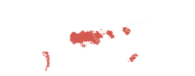

스크롤을 내려주세요
기후변화로 발생하는 자연재해. 어린이들은 내일 더 심각한 가뭄을 견뎌야 합니다.
"비가 두 달 동안 한 번도 안 왔어요."
© UNICEF/UNI37736/Vitale

가뭄이 있는 심각한 곳에서 살고 있는
어린이 1억 6,000만 명
가뭄이 지속 기간과 강도를 측정해 5가지 카테고리로 가뭄을 분류하며
어린이가 밀집한 짐바브웨, 에티오피아 등 동북부 아프리카와 인도 북부, 이집트
몽골 등은 심각한 가뭄지역으로 분류되어 카테고리 4 이상에 속합니다.
출처: WRI(World Resources Institute) Aqueduct

"동생은 아직 걸어 다니지 못해요."
© UNICEF/UN011586/Ayene

가뭄 지역에 사는 산모,
신체적, 정신적 기능이 손상되어
발육이 부진한 아기 출산
나이가 어릴수록 가뭄에 특히 취약합니다.
2세 미만 아이가 가뭄으로 먹지 못 해 영양실조에 걸리면 발육 부진으로
평생 장애를 가질 수 있는 확률이 높습니다.
5세 미만 어린이의 사망 원인 중 50%가 영양실조인 만큼 가뭄으로 인한
식량 부족은 어린이들의 생명을 위협합니다.
- 2세 미만
-
발육 부진으로 장애 회복
가능성 급격히 저하
- 5세 미만
-
기아로 인한
사망 확률 급격히 상승
"우물 바닥까지 들어왔지만... 물이 없어요."
© UNICEF/UNI74782/Pirozzi

땅이 메말라 10시간을 걸어
물을 구해야 하는 어린이들
엘니뇨 현상으로 가뭄이 더욱 심각해진 에티오피아는
긴급 상황을 선포하였고 어린이들은 물을 구하기 위해
10시간(약 30km)을 걸어야 합니다.
하지만 힘겹게 물을 찾더라도 땅만 젖을 수준의 양이거나 식수로
사용할 수 없을 정도로 오염되어 있습니다.
어린이들은 박테리아와 배설물에 오염된 물을 마시고 설사병에 걸려
목숨을 잃기도 합니다.
- 배설물 1g당
- 박테리아 100만 개,
- 기생충 1,000 개 서식
어린이 혼자서는
이 가뭄을 이겨낼 수 없습니다.
유니세프는 아이들 편입니다.
-
- 영양식과 식수를 공급합니다
- 가뭄 지역에서는 영양실조와 식수 부족이 가장 큰 문제입니다. 유니세프는 작년 한 해 동안 영양실조치료식 1,219,158개와 식수 및 위생 물품 14,163개를 공급하였고 올해도 대량 긴급 공급이 필요합니다.
-
- 어린이가 있는 곳 어디에나 있습니다
- 가뭄은 종교, 국적, 인종을 뛰어 넘어 전 세계적으로 발생하고 있는 문제입니다. 유니세프는 190여 개 국가사무소에서 직접 피해 어린이의 생명을 구하는 구호활동을 펼치고 있습니다.
-
- 규모 있는 대응을 진행합니다
- 기후변화는 장기적으로 해결해야 할 문제입니다. 유니세프는 국제 구호단체들의 조정 기관인 IASC의 영양, 식수/위생, 어린이 보호 분야의 리더로서 도움이 필요한 어린이가 있는 현장의 지휘관 역할을 합니다.
-
- 전문적으로 접근합니다
- 기후변화로 발생하는 자연재해는 근본적인 원인을 파악하고 해결할 수 있는 역량이 필요합니다. 유니세프는 독립된 리서치 센터를 통해 기후변화가 어린이에게 미치는 영향을 연구하며 정부와 국제협력을 통해 개선해 나갑니다.
가뭄으로 고통 받는 아이들에겐
바로 오늘 도움이 필요합니다.